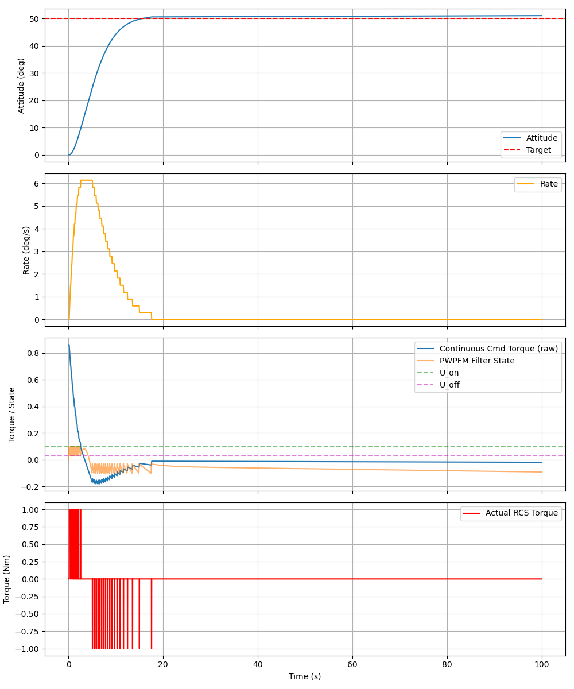
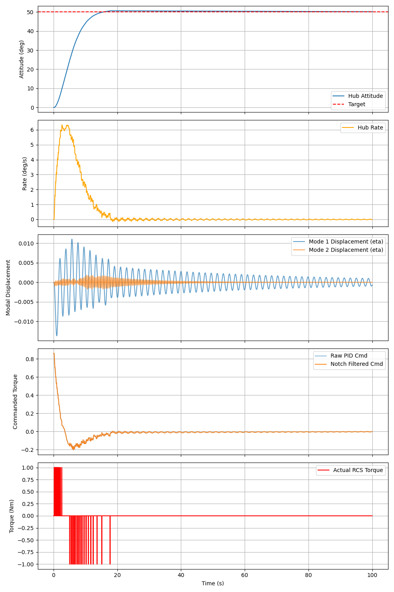
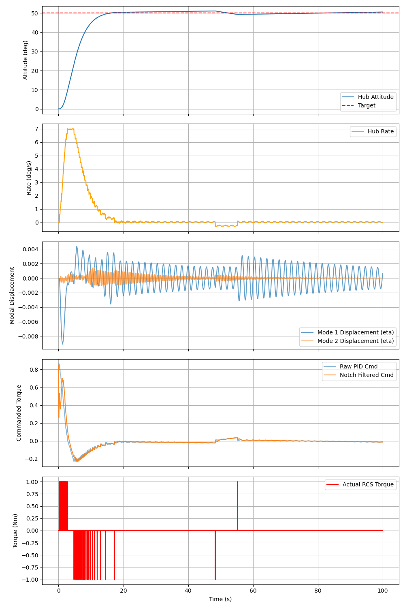
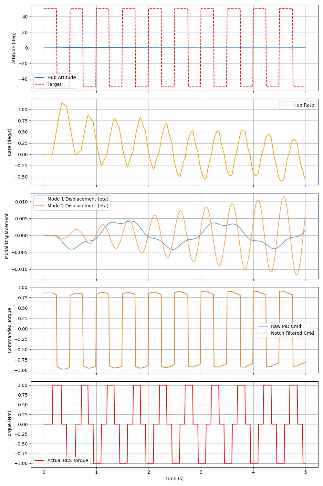
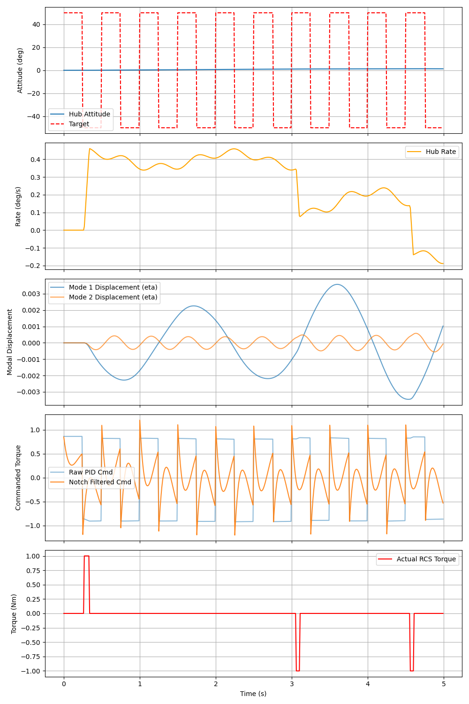
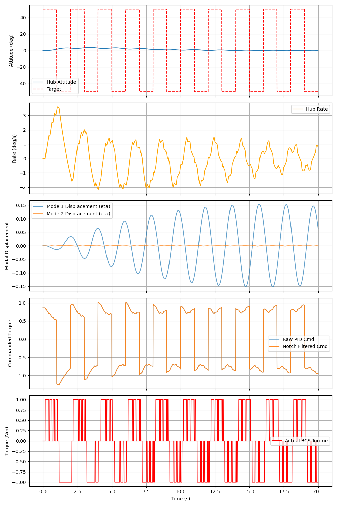
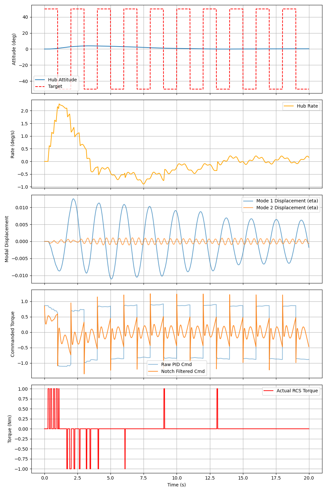

Satellite Attitude Control
1. Time-Domain Simulation Performance
The attitude control system was evaluated for a 50-degree step maneuver using a PWPFM (Pulse-Width Pulse-Frequency Modulator) to drive on-off RCS thrusters. We compared the baseline rigid satellite against a realistic satellite with flexible solar panel modes (0.5 Hz and 2.0 Hz) with and without compensation.
Rigid Satellite Baseline
The pure PD controller and PWPFM seamlessly drove the rigid satellite to the target angle, stabilizing exactly within the designed 1.1° deadband with 29 thruster pulses.

Flexible Satellite (Uncompensated)
Without Notch Filters, the "bang-bang" nature of the PWPFM thrusters continually excites the flexible solar panels, causing severe vibration and a destructive limit cycle where the thrusters chatter endlessly.

Flexible Satellite (Compensated, Step Command)
By adding the Notch Filter compensators, the modal displacements (eta) are quickly damped out. The maneuver is safely achieved in 35 pulses without any resonant limit cycles.

Extreme Maneuver: 2 Hz Square Wave Tracking
To further test the robustness of the system, we commanded a highly aggressive ±50° square wave at 2.0 Hz. This exactly matches the frequency of the second flexible mode, creating a worst-case resonance scenario.
Uncompensated Response
Without the Notch Filters, the system is subjected to severe high-frequency control actions. The thrusters chatter wildly, and the attitude response is highly degraded by the unmitigated structural vibrations.

Compensated Response (Notch Filters Active)
With the Notch Filters engaged, the controller intelligently "ignores" the 2.0 Hz command frequency component. The thrusters fire cleanly, completely suppressing the resonance while still attempting to track the aggressive maneuver safely.

Extreme Maneuver: 0.5 Hz Square Wave Tracking
We repeated the aggressive ±50° square wave test, this time at exactly 0.5 Hz. This perfectly matches the frequency of the first flexible mode, creating another severe resonant coupling scenario.
Uncompensated Response
Just like the 2.0 Hz case, the uncompensated system rapidly destabilizes. The energy from the aggressive maneuver couples directly into the solar panels, leading to intense vibrations and thruster chatter.

Compensated Response (Notch Filters Active)
The Notch Filters successfully remove the resonant 0.5 Hz energy from the torque command. The system smoothly tracks the aggressive 0.5 Hz command using clean thruster pulses, with virtually zero resonant vibration.

2. Flexible Mode Compensator Design
The Bode plot below isolates the frequency response of just this compensator. It heavily attenuates (drops the gain by ~34 dB) exactly at the problematic resonant frequencies. This prevents the PWPFM controller from feeding high-frequency bang-bang energy into the structural vibrations.

3. Full System Stability Analysis
We numerically evaluated the open-loop linear transfer function, L(s) = P(s)C(s)N(s)D(s), incorporating the rigid body, flexible modes, PD controller, cascaded notch filters, and 80 ms of total system delay.
Open-Loop Bode Plot: Notice the sharp "notches" at 3.14 rad/s (0.5 Hz) and 12.56 rad/s (2.0 Hz), cleanly cancelling the resonant peaks of the plant.

Nyquist Plot: The contour safely avoids encircling the critical point at -1+j0, satisfying the Nyquist stability criterion and providing a visual confirmation of the excellent phase and gain margins.